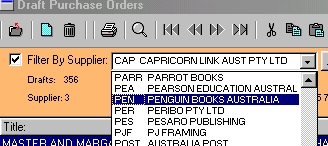

Click on the down arrow at the end of the text box.
A list of all possible choices in alphabetical order will now be displayed.

Now either.....
Method 1: Using the mouse
Scroll the list using the mouse and click on your selection.
Or .....
Method 2: Using the keyboard
Begin typing the abbreviated code (max 4 letters) for your selection and when your selection is highlighted, press the Enter key.
For example to select Penguin Books (abbreviation PENG) type PEN. The highlight will move down the list as you type each letter. When it reaches Penguin
Books press the Enter key.